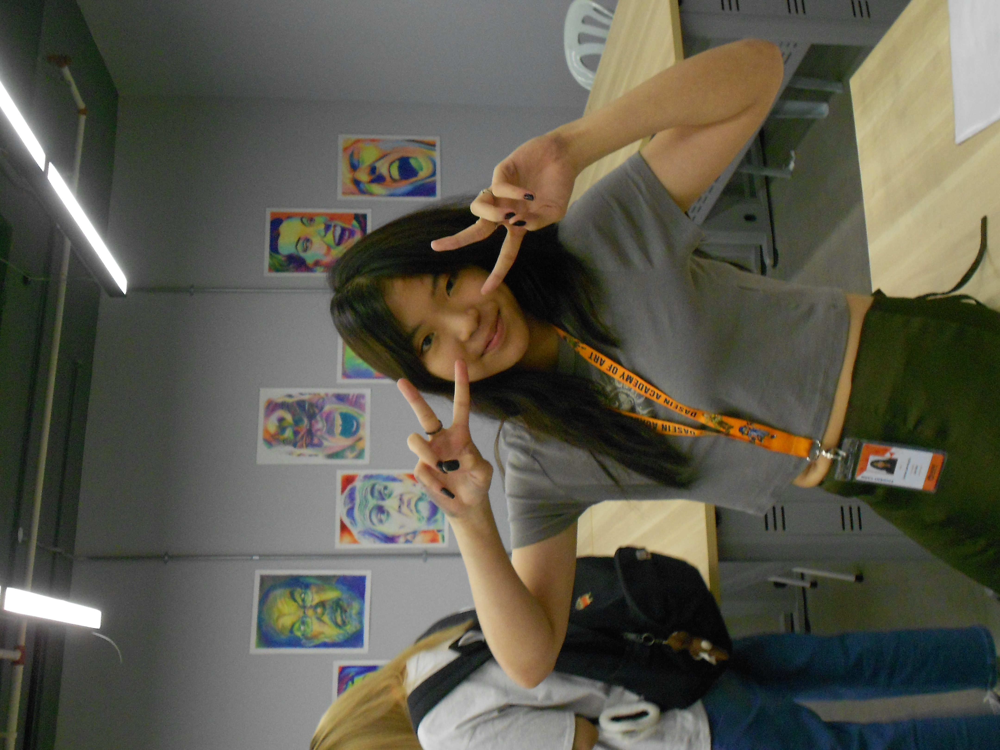

I'm Eunice Lam, an 18-year-old with a deep appreciation for creativity in all its forms. Music is a big part of my life—I love discovering new songs, playing the guitar, and exploring different genres that match my mood. Whether it's strumming a familiar tune or learning something new, playing music has always been a way for me to relax and express myself. Beyond music, I have a passion for handicrafts like knitting, crocheting, and sewing. There's something really satisfying about creating something with my own hands, whether it's a simple piece or a more intricate design. I enjoy the process just as much as the final result, and I find a lot of joy in experimenting with different materials and techniques.
Outside of my creative hobbies, I have a strong interest in true crime podcasts. I’ve always been fascinated by investigative work and forensic science—so much so that I once considered becoming a forensic investigator. Though I ended up pursuing a different path, my curiosity for mysteries and human psychology never faded. Another way I express myself is through fashion. I love experimenting with different styles and putting together outfits that reflect my personality, mood, or just whatever feels right in the moment. While I don’t have a clear roadmap for the future just yet, I enjoy exploring my interests, learning new things, and seeing where life takes me.
